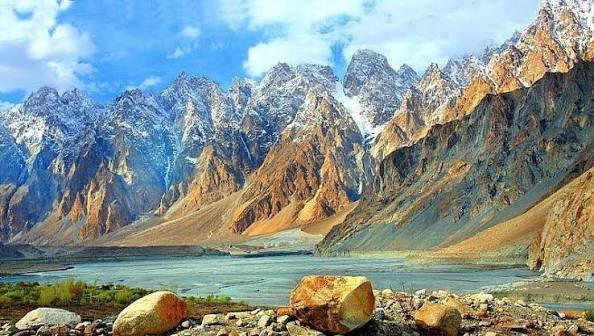
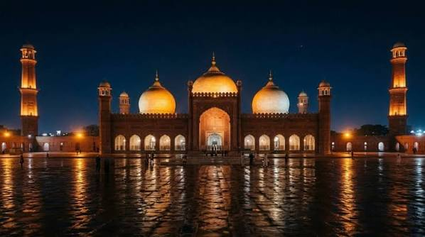
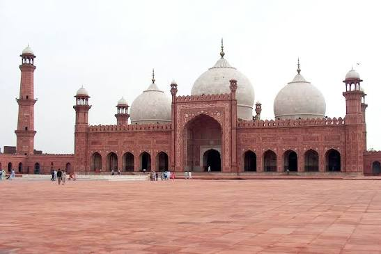
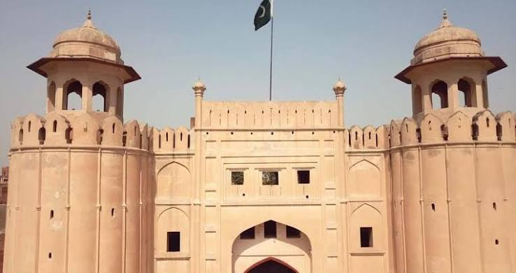
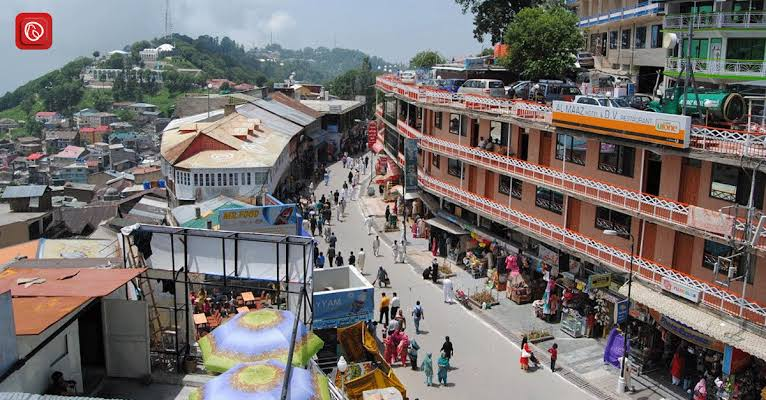
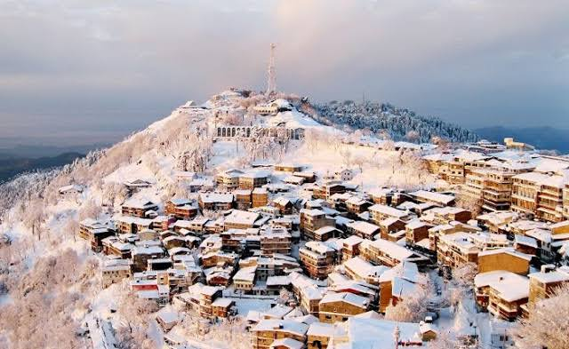
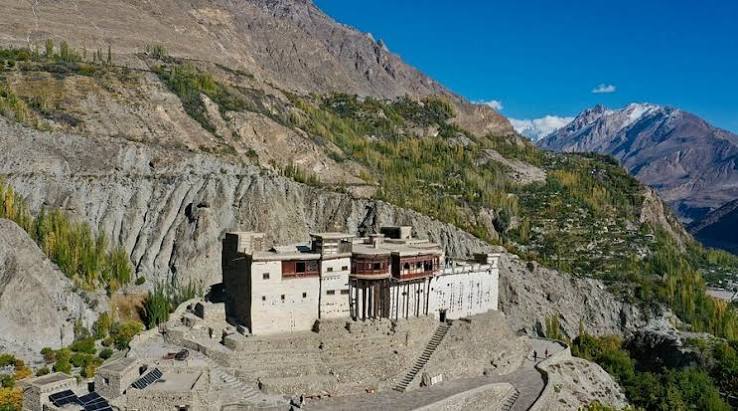
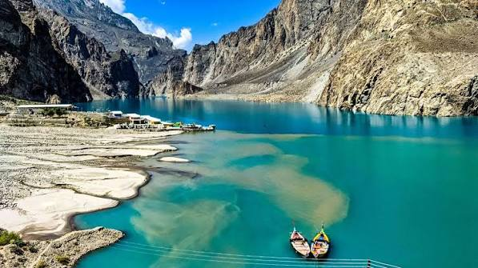

About PakVista
PakVista is a curated travel guide celebrating the rich diversity of Pakistan — from the ancient Mughal grandeur of Lahore and the bustling metropolitan coastline of Karachi, to the lush greenery of Murree and the dramatic peaks of Hunza. Whether you are a first-time visitor or a seasoned explorer, PakVista helps you discover the stories, cuisine, culture, and scenic wonders that make Pakistan one of South Asia's most compelling travel destinations.
Featured Destinations
🕌 Lahore
The cultural capital of Pakistan, known for the Badshahi Mosque, Lahore Fort, and vibrant food streets bursting with flavour.
Explore Lahore →🌊 Karachi
Pakistan's largest city and economic hub, featuring the Arabian Sea coastline, Clifton Beach, and a thriving arts and food scene.
Explore Karachi →🏔️ Swat
The Switzerland of Pakistan — a breathtaking valley of emerald rivers, ancient Buddhist ruins, lush pine forests, and the famous Malam Jabba ski resort.
Explore Swat →🌲 Murree
A beloved hill station in Punjab, offering cool pine forests, scenic viewpoints, and a charming colonial-era bazaar.
Explore Murree →🏔️ Hunza
A magical valley in Gilgit-Baltistan surrounded by towering Karakoram peaks, ancient forts, and some of the world's most hospitable people.
Explore Hunza →Quick Facts
| Destination | Province / Region | Known For | Best Time to Visit |
|---|---|---|---|
| Lahore | Punjab | Mughal heritage, food culture | Oct – Mar |
| Karachi | Sindh | Arabian Sea beaches, commerce | Nov – Feb |
| Swat | Khyber Pakhtunkhwa | Ski resort, Buddhist ruins, emerald river | Apr – Oct |
| Murree | Punjab (hills) | Pine forests, snowfall, hill station | Dec – Feb (snow), Jun – Aug |
| Hunza | Gilgit-Baltistan | Karakoram peaks, apricot blossoms | Apr – Oct |
Gallery









